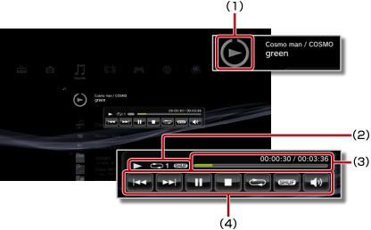

Muziek > Het mini-bedieningspaneel gebruiken
Het mini-bedieningspaneel gebruiken
Gebruik het mini-bedieningspaneel om verschillende functies uit te voeren terwijl u muziek afspeelt.
1. |
Druk op de PS-toets terwijl u muziek afspeelt. |
||||||||
|---|---|---|---|---|---|---|---|---|---|
2. |
Gebruik de richtingstoetsen om het pictogram te selecteren voor de muziekinhoud die wordt afgespeeld onder 
|
Opmerkingen
- Het pictogram voor de muziekinhoud die wordt afgespeeld wordt recht onder het
 (Muziek)-pictogram weergegeven.
(Muziek)-pictogram weergegeven. - Het mini-bedieningspaneel kan worden verborgen door op de
 -toets te drukken terwijl er muziek afspeelt.
-toets te drukken terwijl er muziek afspeelt.
Vorige

Om terug te keren naar het begin van de huidige of de vorige track.
Volgende
Om naar het begin van de volgende track te gaan.
Pauze
Pauze weergeven.
Stoppen
Om de weergave te stoppen en het mini-bedieningspaneel te verbergen.
Willekeurig
Om muziekstukken af te spelen in willekeurige volgorde.
Herhalen
Om tracks herhaaldelijk af te spelen. U kunt een van de drie herhaalstanden (hieronder weergegeven) selecteren door op de  -toets te drukken.
-toets te drukken.
 |
Om een track herhaaldelijk af te spelen. |
|---|---|
|
Om alle tracks herhaaldelijk af te spelen. |
| Geen weergave | Annuleer de herhaalde weergave en speel alle tracks in volgorde. |
Volume instellen
Regel het niveau van het uitvoervolume van de tracks die worden afgespeeld onder (Muziek). U kunt kiezen uit negen niveaus.
Opmerking
De audio-uitvoer kan vervormd raken als het volumeniveau te hoog is ingesteld. Verlaag het niveau als dit het geval is.